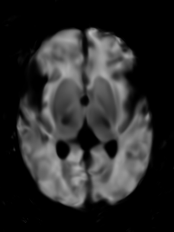
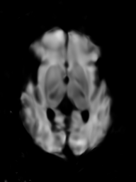

Abstract
The human brain undergoes rapid development during the third trimester of pregnancy. In this work, we model the neonatal development of the infant brain in this age range. As a basis, we use MR images of preterm- and term-birth neonates from the developing human connectome project (dHCP). We propose a neural network, specifically an implicit neural representation (INR), to predict 2D- and 3D images of varying time points. In order to model a subject-specific development process, it is necessary to disentangle the age from the subjects' identity in the latent space of the INR. We propose two methods, Subject Specific Latent Vectors (SSL) and Stochastic Global Latent Augmentation (SGLA), enabling this disentanglement. We perform an analysis of the results and compare our proposed model to an age-conditioned denoising diffusion model as a baseline. We also show that our method can be applied in a memory-efficient way, which is especially important for 3D data.
Fig. 1: Overview: The input to the network f consists of the spatial coordinates x of the desired output pixel Ix, the desired PMA t ∈ T, and a latent vector l ∈ Λ, encoding the subject identity. The switch with probability p between l and the global latent vector lG represents the SGLA
Contribution
We show that an INR can be trained to model the neonatal brain development based on sparsely- and highly irregularly sampled data with respect to the time axis. Figure 1 provides an overview of the model. To enable the disentanglement along the time axis, we propose the following two methods that can be applied independently during training:
- A method to disentangle the subject’s PMA at the time of the scan from its identity by enforcing a subject-specific latent space (SSL).
- An augmentation method with a global latent vector in the latent space. We call it stochastic global latent augmentation (SGLA). This performs similarly to SSL but is intended to make better use of subjects with only a single scan in the dataset. We show how SSL and SGLA can improve the disentanglement, and with that, the predictions. Furthermore, we show that our INR approach can be run on hardware with limited GPU memory.
Results
From each subject in the test set, we consider two scans that were made at a different point of time, i.e., at a different PMA of the subject. For a given subject, we first determine the latent vector based on the input image I1 and PMA t1. We then use this latent vector to generate a prediction for the PMA t2 of the second scan I2. We then compare the predicted image with the second scan which serves as the ground truth for all metrics that we will introduce below. This allows us to quantify how well our model predicts the development process of the brain. We show slices of these four images for multiple subjects and ages in Figure 3.
Fig. 3: Four samples from the test set, along with the PMA t1 of the input, and the PMA t2 of the target ground truth image.
| t1, t2 | Input | Reconstruction | Target GT | Prediction |
|---|---|---|---|---|
|
29.9
38.4
|
 |
|||
|
36.3
42.9
|
||||
|
43.1
35.3
|
 |  | ||
|
33.6
40.9
|
Cite
BibTeX
@article{bieder2024modeling,
title={Modeling the Neonatal Brain Development Using Implicit Neural Representations},
author={Bieder, Florentin and Friedrich, Paul and Corbaz, H{\'e}l{\`e}ne and Durrer, Alicia and Wolleb, Julia and Cattin, Philippe C},
journal={arXiv preprint arXiv:2408.08647},
year={2024}
}